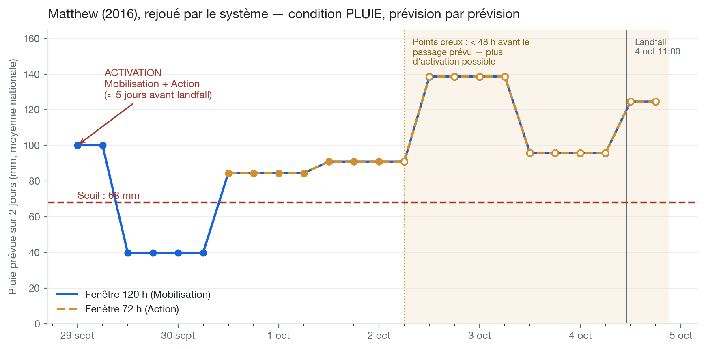
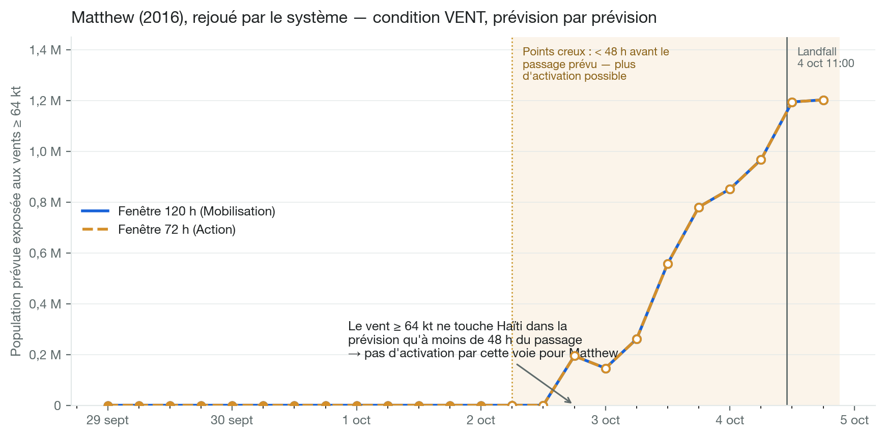

Le mécanisme de déclenchement
Trois déclencheurs spécifiques — Mobilisation, Action, Réponse précoce — évalués automatiquement à chaque avis du National Hurricane Center (4×/jour), à partir des prévisions déterministes NHC (trajectoire + rayons de vent), des prévisions de précipitations CHIRPS-GEFS et des observations IMERG.
Les pages qui suivent donnent la définition exacte, puis montrent le calcul des deux conditions en rejouant l'ouragan Matthew (2016) dans le code de production du système de suivi.
Le mécanisme, tel qu'implémenté
| Déclencheur | Période de retour | Délai maximum des prévisions | Conditions de déclenchement | ||
|---|---|---|---|---|---|
| Prévisions : Mobilisation |
environ 3,0 ans | 120 heures | ≥ 68 mm de précipitations prévues | OU | > 0 personnes prévues d'être exposées aux vents de 64 nœuds |
| Prévisions : Action |
3,0 ans | 72 heures | ≥ 68 mm de précipitations prévues | OU | > 0 personnes prévues d'être exposées aux vents de 64 nœuds |
| OU | |||||
| La DGPC lance une alerte rouge | ET | L'alerte est confirmée par le NOAA NHC avec un « Hurricane Warning » | |||
| Observations : Réponse précoce |
3,4 ans | — | ≥ 57 mm de précipitations observées | OU | > 0 personnes observées d'être exposées aux vents de 64 nœuds |
| Période de retour globale | 2,4 ans | ||||
Pluie : maximum glissant sur 2 jours de la moyenne nationale, dans la fenêtre où la trajectoire prévue est proche d'Haïti, capée au délai du stade. Exposition : population dans la zone de vents ≥ 64 kt prévus. Garde-fou : aucun déclencheur « prévisions » ne peut s'activer si le passage au plus près est prévu à moins de 48 h. Chaque stade s'active au plus une fois par tempête ; une activation est acquise pour toute la durée de la tempête.
Condition pluie — Matthew (2016) rejoué
- À chaque avis NHC, le système prend la prévision CHIRPS-GEFS la plus récente et calcule le maximum glissant sur 2 jours de la pluie moyenne nationale, dans la fenêtre où la trajectoire prévue est à proximité d'Haïti (capée à 120 h / 72 h).
- Seuil : ≥ 68 mm — atteint dès le 29 septembre, soit ≈ 5 jours avant le landfall : Mobilisation et Action s'activent.
- Les points creux sont à moins de 48 h du passage prévu : ils ne peuvent plus rien activer.

Condition vent — l'exposition prévue aux vents ≥ 64 kt
- La prévision déterministe NHC fournit la trajectoire et les rayons de vent par quadrant à chaque échéance.
- Les rayons ≥ 64 kt sont assemblés en une zone de vents d'ouragan prévus, capée au délai du stade (72 h / 120 h), moins la bande déjà observée.
- La population (WorldPop, 1 km) dans l'intersection de cette zone avec Haïti = l'exposition prévue. Condition remplie dès que > 0 personne est exposée.

Pourquoi un « OU » — le vent seul aurait été trop tard
- Pour Matthew, la zone de vents ≥ 64 kt prévue ne touche Haïti qu'à partir du 2 octobre au soir — déjà à moins de 48 h du passage (points creux).
- La condition vent seule n'aurait donc pas activé le cadre pour Matthew.
- D'où la structure du mécanisme : la pluie prévue active 5 jours avant ; l'alerte rouge DGPC confirmée par le Hurricane Warning (émis pour Matthew) offre une voie institutionnelle ; la Réponse précoce sur observations est le filet de sécurité.

Activations historiques, 2002–2025
| Système | Prévision | Observé | Déclenchement global |
CERF | Pop. affectée totale |
|||
|---|---|---|---|---|---|---|---|---|
| Exp. prév. | Précip. prév. | DGPC Rouge + Hur. Warning |
Exp. obs. | Précip. obs. | ||||
| Melissa (2025) | — | 82 mm | — | — | 80 mm | ✓ | $4,000,000 | 2,300,021 |
| Matthew (2016) | — | 139 mm | ✓ | 1,202,447 | 125 mm | ✓ | $10,100,000 | 2,100,439 |
| Jeanne (2004) | — | 30 mm | — | — | 25 mm | — | pre- | 315,594 |
| Sandy (2012) | — | — | — | — | 85 mm | ✓ | $4,000,000 | 201,850 |
| Ike (2008) | — | — | — | — | 36 mm | — | combined | 125,050 |
| Noel (2007) | — | — | — | — | 53 mm | — | — | 108,763 |
| Gustav (2008) | 931,571 | — | ✓ | 931,571 | 93 mm | ✓ | combined | 73,006 |
| Hanna (2008) | — | — | — | — | 57 mm | ✓ | combined | 48,000 |
| Laura (2020) | — | — | — | — | — | — | — | 44,175 |
| Irma (2017) | — | 34 mm | ✓ | — | 37 mm | ✓ | — | 40,092 |
| Dennis (2005) | — | 69 mm | — | — | 37 mm | ✓ | pre- | 15,036 |
| Ernesto (2006) | — | 44 mm | — | — | 63 mm | ✓ | — | 15,000 |
| Isaac (2012) | — | 104 mm | — | — | 133 mm | ✓ | — | 8,007 |
| Ivan (2004) | — | 54 mm | — | — | — | — | pre- | 6,500 |
| Tomas (2010) | 13,161 | 107 mm | ✓ | — | 87 mm | ✓ | — | 5,020 |
| Dean (2007) | — | 39 mm | — | — | 21 mm | — | — | 3,966 |
| Olga (2007) | — | — | — | — | 35 mm | — | — | 2,352 |
| Erika (2015) | — | 19 mm | — | — | 20 mm | — | — | 1,969 |
| Irene (2011) | — | 68 mm | — | — | 53 mm | — | — | 1,544 |
| Fay (2008) | — | — | — | — | 45 mm | — | combined | 220 |
| Elsa (2021) | — | 27 mm | ✓ | — | 41 mm | ✓ | — | 3 |
| Unnamed (2002) | — | 48 mm | — | — | 64 mm | ✓ | pre- | — |
Rejeu du mécanisme sur 2002–2025 (tempêtes ayant déclenché, causé des impacts ou reçu une allocation CERF). Cellules orange : condition atteinte (prévisions évaluées avant le seuil des 48 h). CERF : « pre- » = antérieur à la création du CERF (2006) ; « combined » = allocation combinée Fay/Gustav/Hanna/Ike (2008). Pop. affectée : EM-DAT ; Melissa : chiffres préliminaires.
Calibration historique et garde-fous
- 📊 Périodes de retour calculées par saison sur l'historique 2002–2025 : ≈ 3,0 ans par stade « prévisions », 3,4 ans pour la Réponse précoce, 2,4 ans pour le mécanisme global.
- 🌀 Voie DGPC + Hurricane Warning : à défaut d'un historique des alertes DGPC, la calibration s'appuie sur les produits NHC vérifiés dans les archives — un « Hurricane Warning » pour Haïti revient environ tous les 5,6 ans (5 saisons sur 28, 1998–2025 : Gustav, Tomas, Matthew, Irma, Elsa).
- ⏱️ Garde-fous : pas d'activation « prévisions » à moins de 48 h du passage prévu ; un stade s'active au plus une fois par tempête ; une activation est acquise pour toute la durée de la tempête ; la Réponse précoce est omise si l'Action a déjà activé.
- ⚙️ Fonctionnement : job automatique 4×/jour (03:50, 09:50, 15:50, 21:50 UTC, après chaque avis NHC) ; e-mail d'information à chaque avis pertinent, e-mail de déclenchement à chaque activation.
Chiffres et figures calculés avec le code de production : github.com/OCHA-DAP/ds-aa-hti-hurricanes